Residencial Central Park · Centro Histórico de Pelotas
Piscina aquecida, lounge com bangalôs, dois salões de festas e academia — a poucos passos da Praça Coronel Pedro Osório. Entrega prevista para novembro de 2027.
Proposta de valor
O Central Park não ocupa um terreno isolado. Ocupa a esquina de um projeto de requalificação urbana já em execução — a Passagem Ismael Soares, com espaços comerciais, calçamento adaptado e escola integrados ao entorno.
Investir aqui é investir na única posição vertical dentro desse perímetro. Não existe um segundo Centro Histórico em Pelotas onde replicar esse endereço.
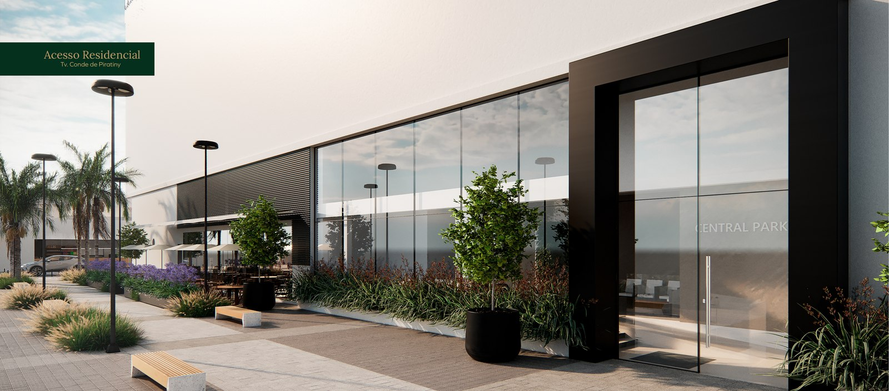
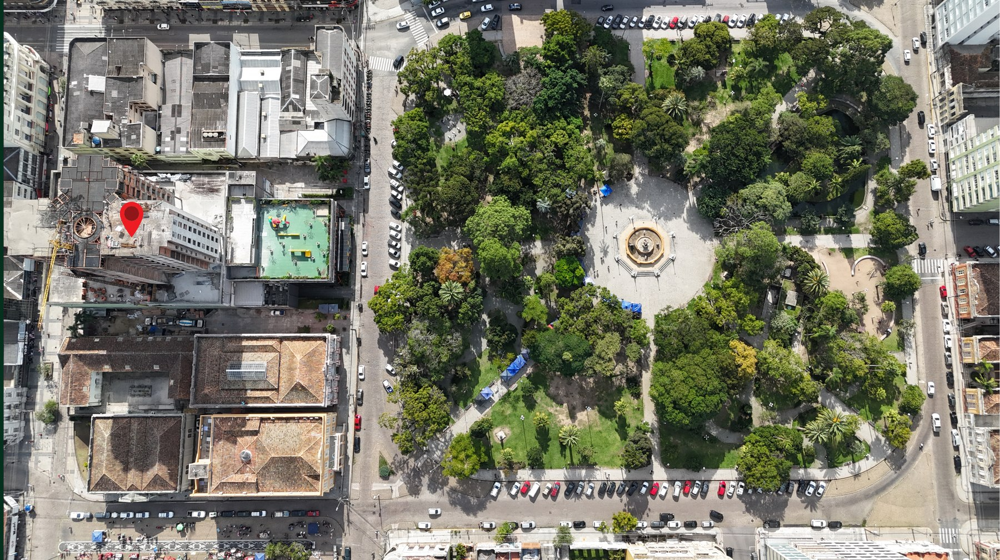
A praça como extensão do apartamento
O Central Park nasce a poucos passos da principal praça do Centro Histórico de Pelotas — o ponto de encontro da cidade, com área verde generosa e arquitetura histórica ao redor.
Não é vista de folheto. É a praça, o comércio e o Centro Histórico funcionando como quintal, todos os dias, a pé.
O número provador
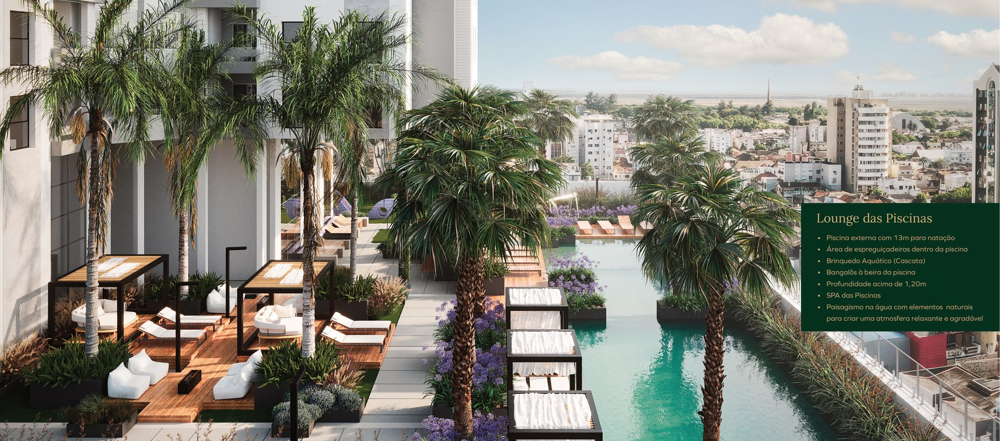
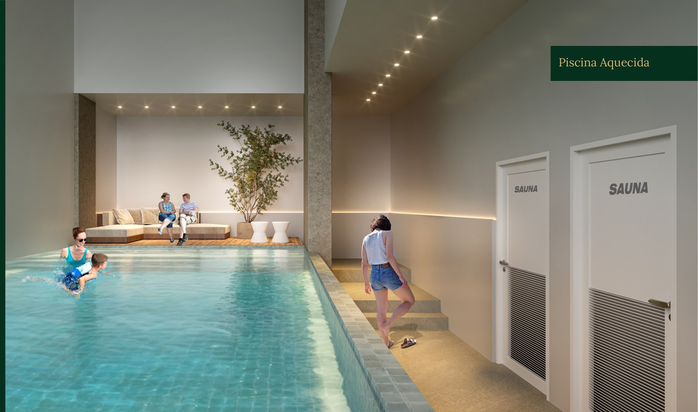
Estrutura de resort, não de condomínio
Piscina externa de 13 metros para natação e piscina interna aquecida, com profundidade acima de 1,20m e paisagismo aquático projetado para criar ambiente, não apenas volume de água.
Lounge com bangalôs à beira da piscina, brinquedo aquático próprio, sauna e academia completam o bloco de bem-estar. Dois salões de festas — Master e Standart — cobrem o evento íntimo e a celebração maior, sem dividir a mesma estrutura.
Engenharia por unidade, não por edifício
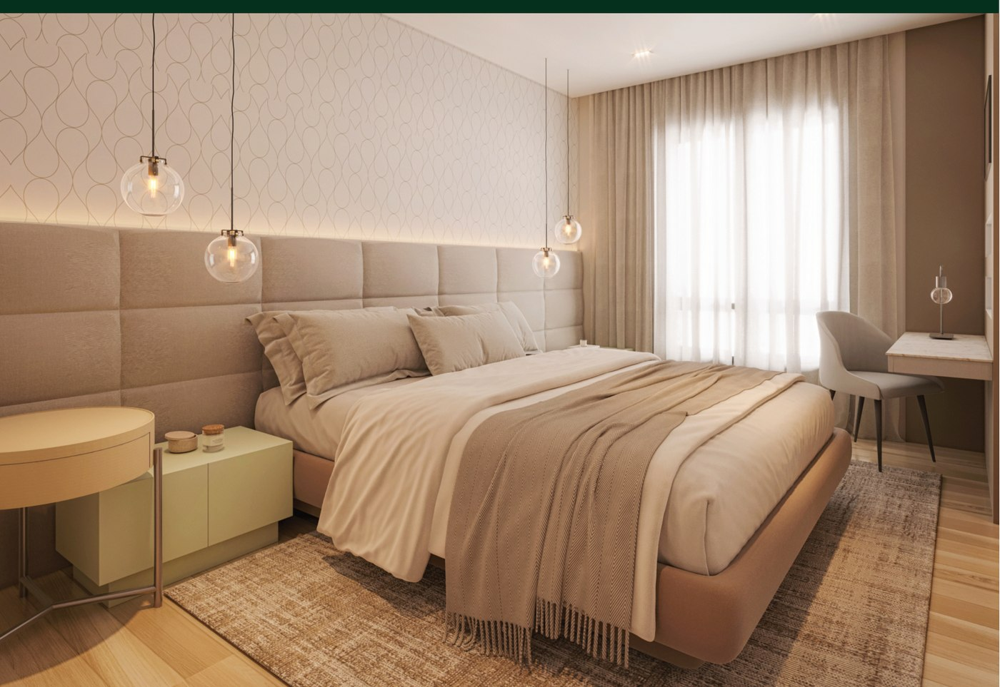
3 plantas · 6 unidades por andar
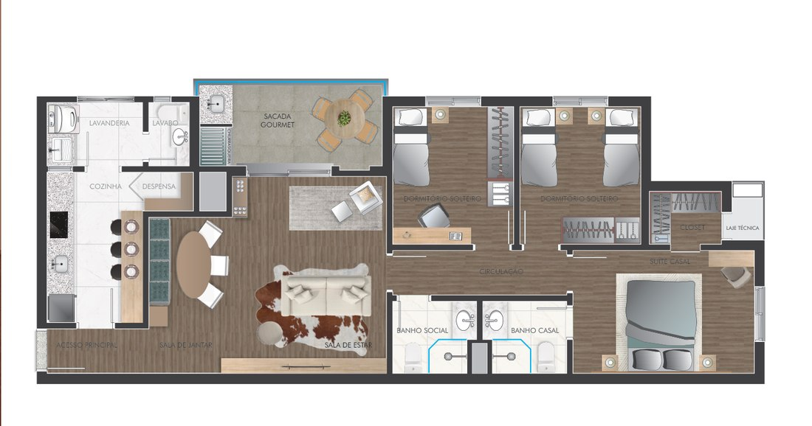
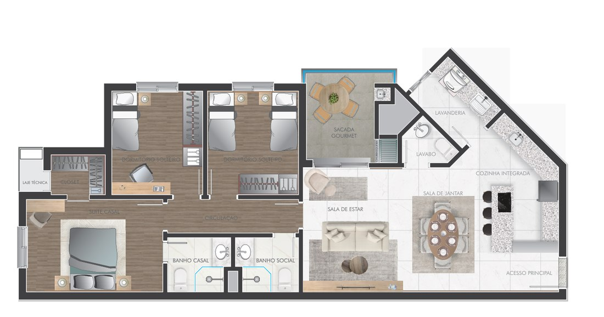
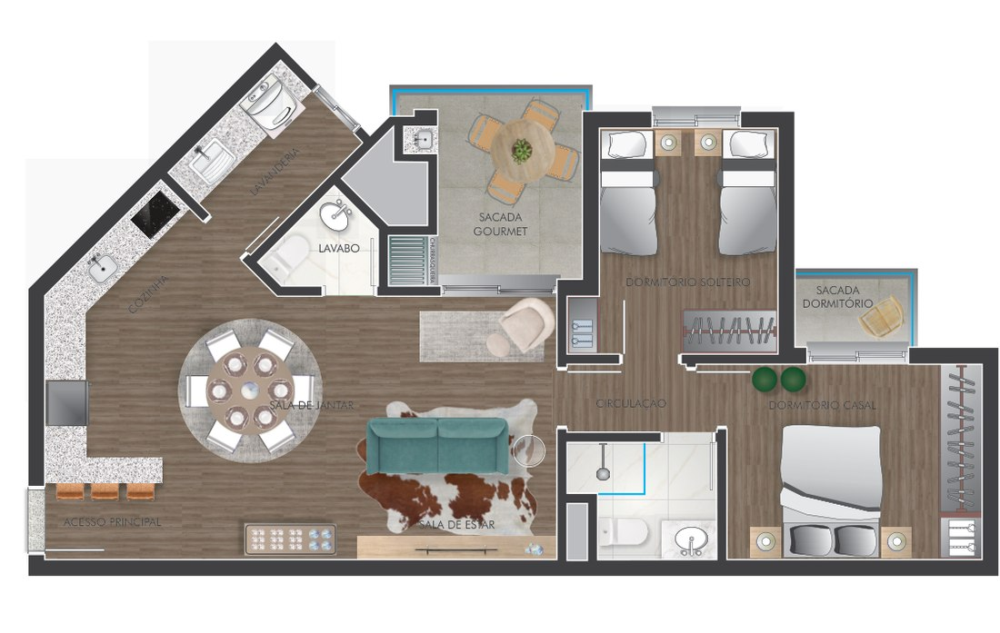
Implantação do pavimento
Seis unidades por andar, distribuídas em três alas. A implantação mostra a posição exata de cada final no pavimento e a rosa dos ventos — o dado que define insolação da sacada, luz da manhã nos dormitórios e temperatura da sala ao longo do dia.
Na visita, o corretor cruza a implantação com o andar disponível pra encontrar a unidade com a orientação que você procura.
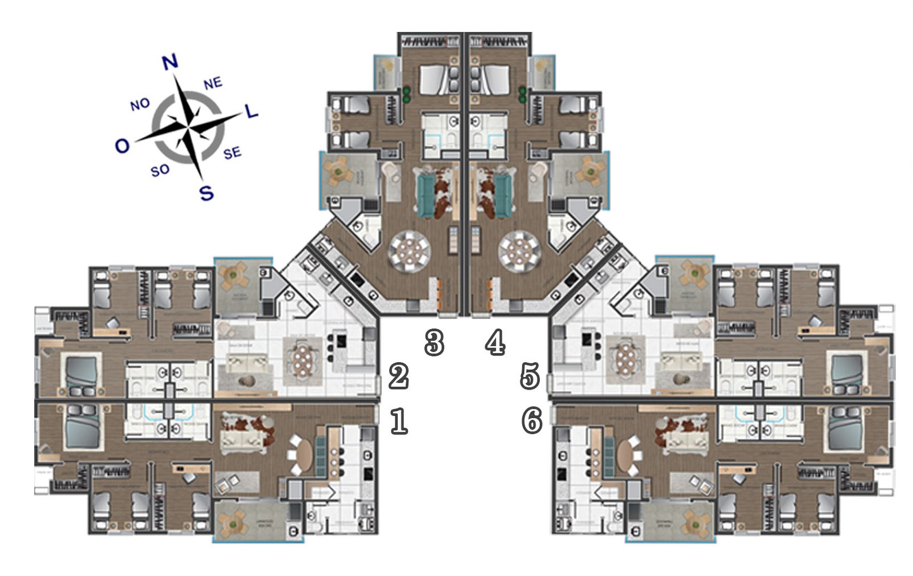
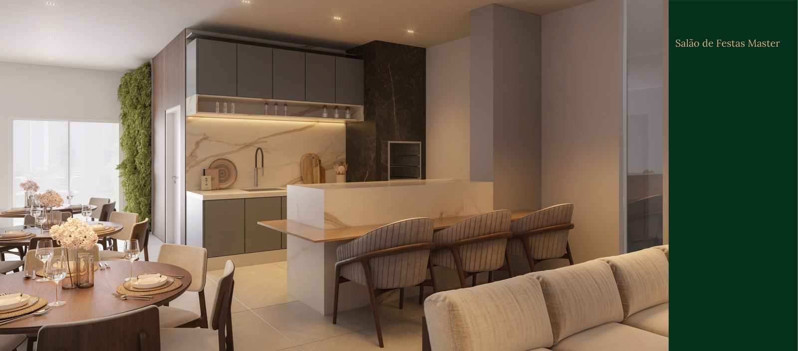
Áreas comuns mobiliadas e decoradas
Coworking, playground, praças internas e salões de festas com acabamento de alto padrão como entrega, não como opcional de tabela. A arquitetura contemporânea do Central Park valoriza o detalhe em cada ambiente de uso comum.
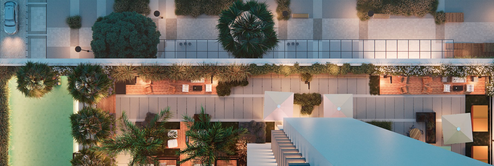
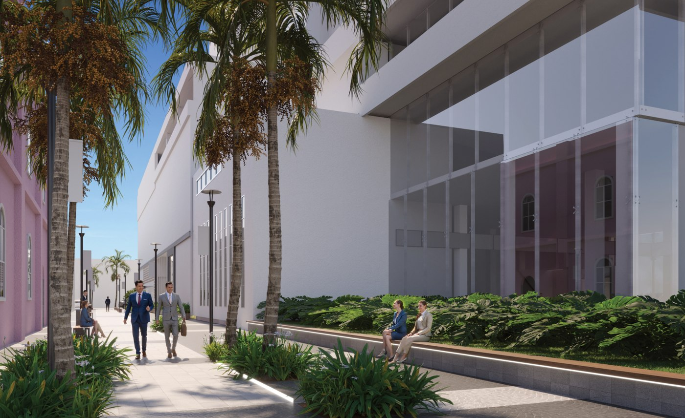
Galeria de ambientes decorados
Quebra de objeções
A obra está em andamento, com entrega prevista para novembro de 2027, no mesmo horizonte da requalificação da Passagem Ismael Soares — dois projetos avançando sobre o mesmo quarteirão, um público e um privado, na mesma janela de tempo. Quem compra na planta agora entra antes de qualquer um dos dois estar concluído.
As condições de compra na planta — 10% de entrada + 30% durante a obra + 60% na entrega (recurso próprio ou financiamento), ou 20% de entrada + 120x direto com a construtora — valem para quem decide na fase atual da obra. Documentação completa do empreendimento e memorial de incorporação são enviados diretamente pelo corretor responsável.
A pergunta não é "por que esse imóvel". É "quantos outros quarteirões verticais existem dentro do Centro Histórico de Pelotas". A resposta está no projeto: nenhum. A requalificação urbana em curso ao redor não se repete em outro lote da cidade.
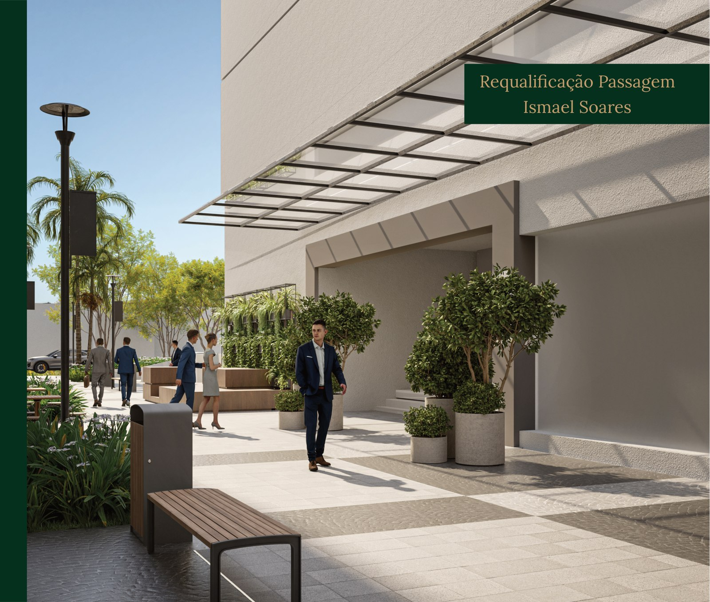
Condições de compra na planta
O Central Park ocupa o único terreno vertical disponível dentro do perímetro do Centro Histórico de Pelotas — uma posição que não se repete, porque não há outro quarteirão como esse pra ocupar.
Com 6 unidades por andar e entrega prevista para novembro de 2027, as condições de compra na planta valem para quem decide na fase atual da obra.